|
今天的死法 當人們心中充斥負面情緒時偶爾會感受到各種生理上的不適, 腦中從而浮現針對那些不適衍伸出的五花八枚的死法, 而這系列的筆記本鉛筆塗鴉,便是孤某日突發奇想將每日所想像出的畫面記錄下來, 但不久便因學業因素失去對時間的掌握與提筆的心力漸漸停止了作圖, 除去系列前孤對自身想法的宣告Full of flaws,共產出15張偶有命名的圖 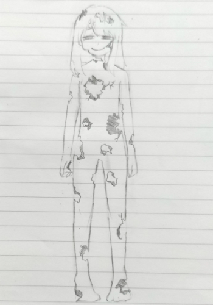Full of flaws;滿是缺陷 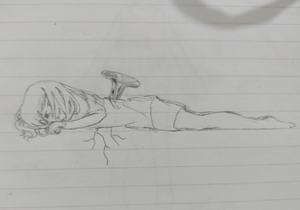無題 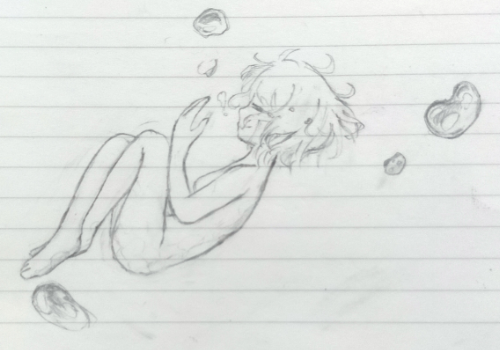drown;溺亡">drown;溺亡 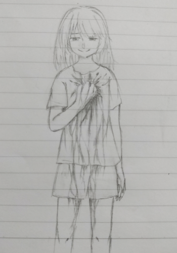killed by darkness;被黑暗殺死 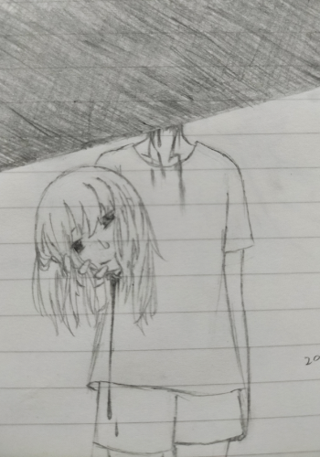無題 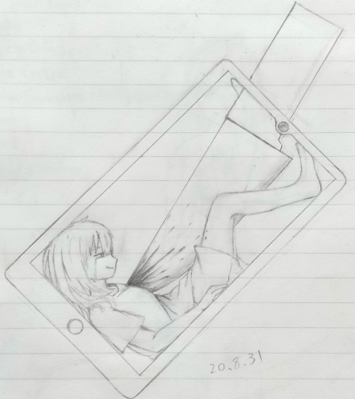無題 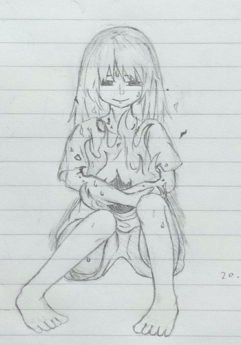無題 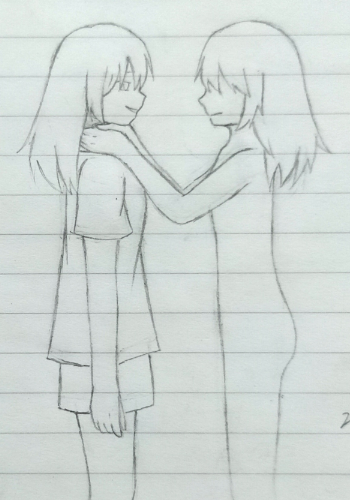self-loathing;自我厭惡 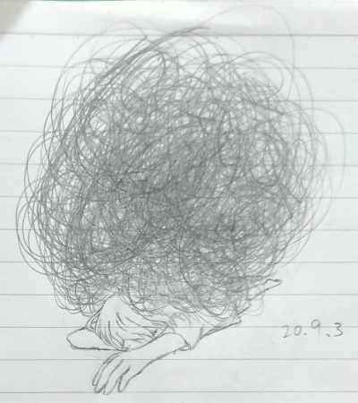無題 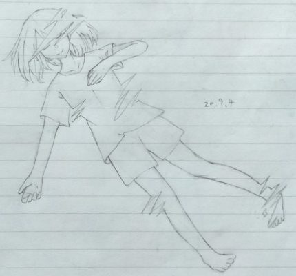disappear 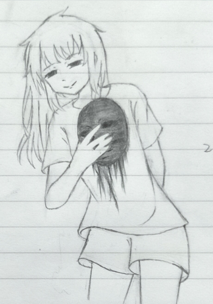無題 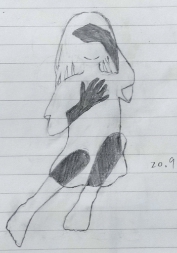無題 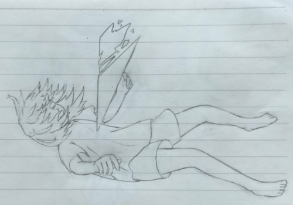無題 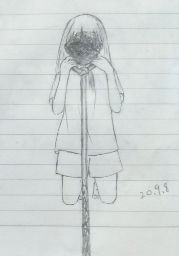time to end;是時候結束了 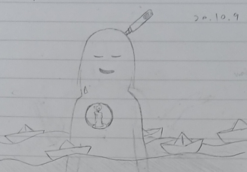inner scream 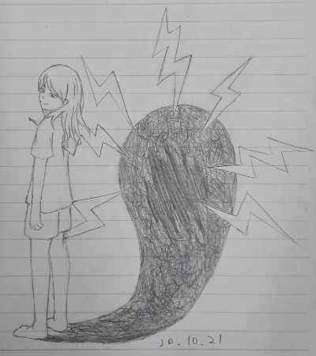waiting and for;孤燭待援 |